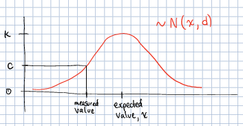

Wii-Track
In this document, we will give an overview of Wii-Track, describe its overall system architecture, explain our hackathon implementation, and discuss how this project could be implemented at an industrial scale.
Overview
Wii-Track is a system for package tracking designed for use in a variety of scenarios such as warehouses. The name Wii-Track comes from the fact that we used a WiiFit board as our scale for this prototype.
Our overall goal was to make inventory tracking more cost-effective by utilizing sensors and data analytics to identify inventory items automatically. For the hackathon, we utilized two metrics (weight and color) to identify objects, however, we designed the system to scale to any number of additional metrics such as image recognition and infrared image data.
Our project was inspired by the Dish challenge at the HackCU hackathon. Their challenge was to create a system for asset tracking which utilized IOT technologies.
Architecture
At a high level, the Wii-Track architecture has three components: edge nodes, compute nodes, and a data store. User-facing applications can be built on top of this framework (see Hackathon Implementation and Industrial Scale Implementation below).
- Edge nodes: these nodes collect data about items, and send the raw data to the compute nodes for processing.
- Compute nodes: these nodes process raw data using a variety of analytics. In our case, these nodes were AWS Lambda functions.
- Data store: this stores information about the inventory and how it is moving around. For our prototype, we utilized the AWS DynamoDB NoSQL database to store information about the items we processed.
There can be any number of edge nodes and compute nodes, and DynamoDB could be replaced by any other database.
The overall software architecture is visualized below:

Here is a (non-comprehensive) list of considerations we discussed as we designed our system architecture:
Edge nodes may not have much compute power. For our prototype, we used a Raspberry Pi 1 which only has a 600 MHz ARM processor. Starting up the Python 3 interpreter can take over 30 seconds! However, compared to many embedded devices, the Raspberry Pi has a large amount of compute power. Operations such as string manipulation and floating point arithmetic are not possible on many embedded devices.
This led us to push all of the computation onto AWS Lambda. Edge nodes only send raw data and we can then utilize the power of the Amazon infrastructure for data processing.
Edge nodes may be difficult to update. These edge nodes may be installed in low-bandwidth areas and then possibly not replaced for years. It would be very difficult to add new features if those features required deploying an update to the edge nodes. Instead, we do almost all computation in lambda where publishing updates is easy.
Server administration is hard. AWS Lambda abstracts the server away, so we are able to concentrate on code, not deployment. This was great for not only the HackCU hackathon, but also for scalability in the long term.
The data stored will not be uniform. If we have many different versions of edge nodes, the data sent and stored may not be the same across versions. For example, one version may send image data, while other nodes only have infrared data. Additionally, the data is not highly relational; relations between data are derived at an application layer. This variance in data that we need to store led us to use AWS DynamoDB, a scalable, NoSQL database running on Amazon infrastructure.
We wanted to, and did, win the Best Use of AWS challenge. One of the prizes at HackCU was for the application that best utilized AWS. This was part of the reason why we used AWS Lambda and AWS DynamoDB. Our entry into this challenge won.
Hackathon Implementation
At HackCU, we implemented a proof of concept for this project. We built a prototype edge node, compute node, and datastore; a simple GUI client to view the data in the datastore; and a simple GUI to control the edge node.
Edge Node
Note
See the arduino and rpi directories and the wiiboard.py file for the edge node source code.
We implemented our edge node with two sensors: a scale (the WiiFit board) and a camera (Raspberry Pi camera mounted on an Arduino-controled servo). The Raspberry Pi was connected over serial to the Arduino which controlled a servo. This servo swivelled the camera around. The camera was connected directly to the Raspberry Pi.
We built a client application in Python using Qt which allowed control of the servo/camera angle and also showed a live image of the package. We also had the ability to take pictures of the package. Our prototype required user interaction to take a picture, but ideally, we would trigger this picture when the package is put on the scale.
The WiiFit board was connected over Bluetooth to one of our computers. We would have liked to make the Raspberry Pi communicate directly with the WiiFit board, but this was infeasible since the Raspberry Pi does not have Bluetooth capabilities. We used the wiiboard library to communicate with the WiiFit. It provided us with a constant stream of data consisting of four data points. Each data point gave the weight measurement for one of the four quadrants on the WiiFit board. We sent this data directly to AWS using the requests library.
Compute Node
Note
See the color-lambda and weight-processing-lambda directories for the lambda function source code.
We created two Lambda functions to process the data from the edge node. If both the scale and camera were controlled by a single Raspberry Pi, we could have made it a single Lambda function. However, because the edge node was implemented on two different computers, we had to create two Lambda functions for our prototype.
Color Processing Lambda
The color-lambda function processed data from the camera. It used Pillow to process the image data, and used the root-mean-square formula to find the dominant color. Since we were filtering out a white background, this formula was better than the average because it compensates for any white in the object that was accidentally filtered out.
Weight Processing Lambda
The weight-processing-lambda took the weight data, and attempted to match it to the weights already stored in a database table. The algorithm was as follows:
Take all of the weight data that is being sent from the WiiFit and calculate the average weight.
Query a database pre-seeded with information about inventory items to get all inventory items within 4kg of the measurement. (We could be much more intelligent about this margin, but for the hackathon, we just hardcoded it.)
Calculate a confidence that the item on the scale is indeed that object. We used a very simple metric for this: the value of the PMF of a normal distribution centered around the expected weight from the database, x, and a standard deviation, d, also stored in the database. The height of a normal distribution is not 1, so we had to multiply by a factor (1 ⁄ k) to convert it to a percentage.
Store the confidences of each item in the DynamoDB database using the boto3 library by Amazon for manipulating AWS objects.
Datastore
Note
See the dynamodb directory for the code related to creating the database, and some test data that we used during development.
We used AWS DynamoDB as our datastore. We used it to store manually-computed inventory weight information, calculated RGB color values, and the results of our predictions from the Lambda functions.
Client Application
Note
See the desktop directory for code related to creating the database schema, and some test data that we used during development.
We created a Qt application in Python to query data from the datastore and present it to the user. It showed the image of the package, as well as the calculated color from the color-lambda, and the confidences generated by the weight-processing-lambda.
Industrial Scale Implementation
Our hackathon prototype cut a lot of corners, however we designed our project with scalability in mind. We began by thinking big-picture, and talked about what a full scale implementation would look like. We thought of a few scenarios where this project could be used such as inter-warehouse use and rural areas that currently have limited package tracking infrastructure. From these broad goals, we chose a set of features which we thought would be a good proof-of-concept, and that is what we implemented during the hackathon.
By starting with how this project may scale, we were able to make informed decisions about the architecture of our system. We have already discussed some of these scalability considerations in the context of how they affected our overall system's architecture in the Architecture section above. Here we concentrate on some of the additional considerations and scenarios that arose when we thought about how we might deploy this project at scale in industrial environments, but which did not directly affect our system architecture choices.
Additional Sensors
We had a very limited set of sensors to work with, and they were not very accurate. In a production environment, we would want to use much higher quality sensors, and increase the number of sensors utilized.
One example of such a sensor is a barcode scanner. We could add that to our node as a primary method for determining what an item is, and then use all of the other metrics to ensure that the item is in fact what the barcode says it is. The story that drove this was a warehouse scenario where these edge nodes are deployed in many places throughout the warehouse. If a non-trustworthy worker switched a barcode, or somehow the barcode just fell off in between two edge nodes, there would be a clear paper-trail to identify the problem.
To support new sensors on a node, we would either create new Lambda functions, or update existing ones to handle the new data. Since we utilize a non-relational database, storing these additional metrics does not require any database changes.
Multiple Versions of Edge Nodes
We envision edge node deployments to remain for years. However, newer versions of the edge nodes could be made in this time period. To handle these new versions of edge nodes, while maintaining backwards compatibility, we would just write new Lambda functions to handle the new nodes, and point the newer edge nodes to the new Lambda function.
High Traffic Intensity
We want to be able to rapidly scale the computational power available depending on the number of packages which need to be processed. Such a high volume would be UPS warehouses during the holidays. In these scenarios, we would want the infrastructure to scale automatically to meet the increased demand while maintaining low latency.
Our plan for this scenario is to put the AWS Lambda functions into auto-scaling groups so that we can utilize Amazon's infrastructure to scale the computational power rapidly.
Adding Additional Data Analysis Methods
In the future, we may find new ways to analyze the raw data to give better predictions about what item is being processed. To accommodate these new methods, we merely have to update the Lambda functions.
A few examples of additional analysis methods include:
- Weight distribution over time. An example would be an item containing liquid. The liquid may slosh around while on the scale, and cause the weight distribution to change. This metric could potentially prevent someone from replacing one item with an item with the same-weight, but different contents.
- Image recognition. We currently use the color to help identify the object, however, this metric is not very good. We could use neural networks to do complex image recognition to better identify the item being examined.
Implementation of both of these analytics methods could be aided by the use of perceptual hashes.
Since all of the computational power is concentrated in the Lambda compute nodes, these computationally-intensive ML processes can be done on x86 processors and GPUs running on AWS infrastructure rather than on edge nodes which may not even have a traditional processor.
Improved Handling and Traceability
Our project utilized DynamoDB to allow storage of arbitrary data associated with a certain measurement. This is great for flexibility, but causes some problems with tracking packages' movement through a warehouse as there is not really a direct trail. To add this direct trail, we could either convert to a relational database or use a hybrid approach where we have relational data for tracking the package through time, and non-relational data to store the individual data points.
Remote Supervision of Edge Nodes
The edge nodes will not always be able to perfectly identify the object in question. In these cases, a human may need to intervene. We could easily create a system that would allow a human to remotely view the camera feed, move the camera around, view the data gathered from the sensors and the confidences generated by the Lambda compute node computations, and view historical data about the item. The supervisor could then override the system, or even send out a person to the floor to examine and resole the problem. This would allow for a single supervisor to have a real-time picture of the state of the entire system, and could reduce personnel overhead.
Customer Facing Applications
Having images of objects as they move through and between warehouses can greatly improve the customer experience. Right now, for example, UPS gives tracking information about a package, but it is not very detailed. If Wii-Track were deployed throughout their warehouses, they could generate much more granular data, and also provide images of the package to the customers.
We could implement web apps or native applications to present this data to customers.
Business Process Improvement
By collecting all of this data, businesses who deploy Wii-Track will be able to identify and respond to problems in their warehouses, supply chains, personnel, etc. more easily. For example, if a lot of items get lost or damaged between node A and node B, there may be is a problem with the conveyor belt system which causes items to get caught between two of them, and sometimes fall off. Obviously this is not a good situation, but the source of the problem can be identified quickly by inspecting the data from the nodes. This will reduce the wasted time trying to find the problem.
We could create applications which notify supervisors of problems, and then present the data that supervisors need to identify the problem.
Conclusion
Although Wii-Track is a prototype, its architecture is robust, and its businesses applications are numerous. Our hackathon prototype implementation provides a proof-of-concept for the idea and tested the viability of the system architecture. We believe that with continued improvement, Wii-Track can be turned into a viable product which can be deployed at scale.